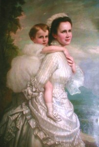

© Muzeul Național Peleș


 printați
printați
+40244 310 918 |
peles.ro@gmail.com |
Regina Elisabeta
Elisabeta-Paulina-Otilia-Luisa (1843-1916), Prinţesă de Neuwied şi prima Regină a României, a demonstrat încă din primii ani de viaţă înzestrare intelectuală deosebită şi un suflet de artist. Sub atenta îndrumare a tatălui, Principele Hermann de Wied, gânditor, om de ştiinţă şi artist deopotrivă, viitoarea suverană s-a bucurat de beneficiile spirituale ale unei culturi de excepţie. Până în 1869, anul căsătoriei cu Principele Carol, îşi împarte existenţa între studiu şi acţiuni caritabile, sub privirea exigentă a mamei sale, Maria de Nassau. Studiază astfel, limbile clasice, literatura franceză şi engleză, filosofia, istoria, gramatica şi dovedeşte un talent ieşit din comun în asimilarea limbilor străine: italiana, franceza, engleza, suedeza şi rusa. În paralel, primeşte lecţii de pian de la Clara Schumann şi Arthur Rubinstein, deprinde desenul, acuarela şi pictura, studiază orga şi clavecinul. Îşi desăvârşeşte cultura urmând cursuri strălucite de filosofie la Universităţi prestigioase, precum Budapesta şi Heidelberg şi talentul, aprofundând pictura la Academia de Belle Arte din Berlin. Lectura continuă, lecţiile de muzică şi înclinaţia precoce către poezie şi scris, în general au reprezentat de-a lungul existenţei sale zbuciumate un stil de viaţă şi un refugiu împotriva singurătăţii şi nefericirii personale.
|  | În ciuda situaţiei politice complicate, primii ani de domnie îi aduc echilibrul şi seninătatea mult aşteptate: în 1870 se naşte Principesa Mărioara, unicul copil al cuplului princiar, dar bucuria se dovedeşte de scurtă durată. Privată brutal de fericirea de-a fi mamă, Elisabeta îşi concentrează uriaşa sa energie şi afecţiune către lucrurile care îi definesc caracterul generos şi implicat: devotamentul său exemplar manifestat în timpul Războiului de Independenţă (1877-1878), când patronează serviciul de Cruce Roşie, îi atrage supranumele de ,,mama răniţilor”. ,,Nu vă plângeţi că suferiţi, căci învăţaţi să daţi ajutor”, recomanda viitoarea Regină în ,,Cugetările” sale. Fidelă propriilor afirmaţii, înfiinţează sau patronează şcoli, societăţi de caritate şi spitale, dar mai ales desfăşoară o vastă activitate de mecenat: Elisabeta descoperă sau susţine moral şi financiar tinere talente sau artişti consacraţi deja atât din România cât şi din străinătate. De bunăvoinţa şi atenţia Reginei s-au bucurat pe rând personalităţi precum George Enescu, Dumitru Dinicu, Nicolae Grigorescu, Elena Văcărescu, I. L. Caragiale, Vasile Alecsandri. |
Dezinteresată de politică, faţă de care manifesta mai degrabă dispreţ, Regina se dedică serilor de muzică şi literatură, pe care le organizează cu regularitate, mai întâi în reşedinţa regală din Bucureşti, apoi în cadrul maiestuos al castelului Peleş. Sălile de muzică ale castelului, impregnate de spiritul Romantismului german au găzduit personalităţi celebre ale lumii literare şi muzicale, precum Pierre Loti, Sarasate, Paderevski, Rejane, Eleonore Duse, Sarah Bernhardt şi mulţi alţii. Încurajată de către Vasile Alecsadri să scrie, Elisabeta se dovedeşte o prolifică autoare de romane, eseuri, satire, piese dramatice, articole avangardiste, basme pentru copii, dar şi o talentată traducătoare de folclor şi poezie românească. Sub pseudonimul literar ,,Carmen Sylva”, Regina cucereşte adeziunea Academiei franceze, care îi conferă în anul 1888, prestigiosul premiu ,,Bottà” pentru volumul de versuri ,,Cugetările unei Regine”, dar şi inimile anglo-saxonilor, care îi atribuie cu onoruri deosebite în 1890 titlul de ,,Bard al Scoţiei”. Înzestrată nativ cu un talent plurivalent, Regina transformă tot ce atinge, în artă: broderiile sale elaborate sunt premiate în cadrul unor expoziţii prestigioase, manuscrisele sale împodobite cu anluminuri iau calea lăcaşurilor de cult, iar picturile sale decorează interioare şi piese de mobilier din reşedinţele regale.
Suverana pe care Regina Maria o numeşte cu admiraţie ,,făuritoarea de vise” a fost pe rând patroana artelor, distins om de litere şi regină devotată ţării sale de adopţie, dar totodată una dintre cele mai strălucite personalităţi feminine ale secolului său.
SOCIETĂŢI DE CARITATE PATRONATE DE REGINA ELISABETA
Nicolae Iorga îi atribuia pe bună dreptate Elisabetei meritul de a fi impus de la înălţimea tronului regal ,,(…) un simţ al intelectualităţii, un respect al culturii, o religie a artei, un sacerdoţiu al poeziei, care au înălţat şi România”. Alături de vasta activitate culturală desfăşurată cu consecvenţă timp de aproape cinci decenii, s-a remarcat printr-o neobosită implicare în crearea unui sistem de caritate, încurajând totodată doamnele din înalta societate să aibă un rol activ în strângerea de fonduri şi în gestionarea actelor filantropice.
Imediat după venirea în România, obţine subscripţii pentru terminarea construirii Azilului ,,Elena Doamna“, proiect iniţiat de Elena Rosetti Cuza, soţia domnitorului Al. I. Cuza, în anul 1862. Principesa oferă cu generozitate din economiile personale suma de 12.000 franci pentru construirea unei capele în incinta azilului, a cărui piatră de temelie este pusă în mai 1870.
Şase ani mai târziu, fondează ,,Societatea Naţională de Cruce Roşie” din România, a cărei preşedintă de onoare este. Odată cu izbucnirea Războiului de Independenţă, alături de generalul Carol Davila, inspectorul serviciului sanitar român, crează ,,Serviciul de ambulanţă”. În paralel sunt înfiinţate spitale de campanie, iar opt medici militari germani activează în Principate sub conducerea directă a suveranei. În zona Palatului Cotroceni, sunt construite două barăci pentru răniţi din caseta personală a Elisabetei, care oferă 36.000 de franci, adică toate economiile sale, iar Gara Cotroceni este transformată în spital sub coordonarea doctorului Wilhelm Kremnitz.
"Institutul Surorilor de Caritate” din Bucureşti, fondat în anul 1879, din veniturile personale ale Reginei, funcţionează într-un imobil achiziţionat de către aceasta sub comanda iniţială a Alexandrinei Florescu şi sub îndrumarea unui comitet controlat tot de suverană. Personalul recrutat dintre asistentele medicale sau dintre călugăriţe activează în spitale, îngrijind bolnavii la domiciliu, răniţii de război, etc. Institutul acceptă fără rezerve orice fel de donaţii.
O amplă activitate filantropică desfăşoară de asemenea ,,Societatea Regina Elisabeta”, înfiinţată în 1893, care tratează anual circa 17.000 de pacienţi, distribuie medicamente gratuite şi monitorizează starea familiilor nevoiaşe. Răspunderea revine unui consiliu administrativ alcătuit din cincisprezece membri, coordonat printre alţii, de Mihail Suţu, fostul guvernator al Băncii Naţionale a României, dar şi din cincisprezece aristocrate desemnate de Regină, a căror preşedintă era Maria Poenaru, doamnă de onoare a Palatului. Treptat, societatea se consolidează, în 1905 atingând un capital de 1.500.000 franci. Anual, ziarele publică o dare de seamă a tuturor activităţilor Societăţii, precum şi un rezumat al situaţiei financiare. Cele cincisprezece doamne întreprind vizite la domiciliile săracilor şi raportează cu fidelitate situaţia din teren, întreaga lor conduită fiind monitorizată de suverană.
"Policlinica Regina Elisabeta”, fondată în anul 1895, oferă consultaţii gratuite săracilor, sub coordonarea vigilentă a doamnei Maria Boerescu şi sub patronajul onorific al Elisabetei, ca şi ,,Leagănul Sfânta Ecaterina”, înfiinţat şi întreţinut de Ecaterina Cantacuzino. Apar societăţi noi, precum ,,Materna”, condusă de doamna Creţulescu, profesoară la Facultatea de Medicină din Paris, ,,Institutul Evanghelic al Diaconeselor” din Bucureşti, care patrona un sanatoriu în capitală şi o şcoală la Ploieşti, Societăţile ,,Pâinea zilnică“ şi "Tibişoi” condusă de doamna Brăiloiu. Aceasta din urmă distribuia îmbrăcăminte copiilor şi venea în ajutorul familiilor, în caz de boală sau incapacitate de muncă a părinţilor.,,Societatea de Binefacere” de la Iaşi, Spitalul ,,Elisabeta” din Galaţi, Societatea ,,Obolul”, pusă sub patronajul Principesei Maria, condusă de doamna Perekyde, născută Marghiloman, sprijină toate operele caritabile de la Neuwied, iniţiate de Maria de Wied, mama Reginei: spitalul, azilul de orfani, Institutul de surdo-muţi şi de orbi.
Regina a avut inteligenţa de a înţelege uriaşul potenţial al culturii tradiţionale româneşti cu specificul său meşteşugăresc şi agricol. Uimită de frumuseţea portului popular, îl adoptă fără rezerve şi apoi îl impune suitei regale în cadrul maiestuos al curţii, conferindu-i o înaltă prestanţă socială. Regina încurajează dezvoltarea industriei locale, contribuind astfel şi la emanciparea socială a femeii române. Apar Societatea ,,Concordia”, înfiinţată pentru a favoriza dezvoltarea industriei textile din România, Societatea ,,Furnica”, prezidată de Elena Cornescu, născută Manu. Broderiile confecţionate aici sunt apreciate la Londra şi la Paris de către marile Case de Modă. În 1905, la Paris, la Pavilionul Marsan, se deschide expoziţia de broderie a Annei Roth, cea care conducea atelierul de broderie. Despre expoziţie scrie elogios întreaga presă franceză. Expoziţia poartă numele ,,Broderii Carmen Sylva“. La Domeniul Segenhaus, pe care Elisabeta îl moşteneşte în 1902, deţinea o importantă colecţie de broderii semnată de aceeaşi Anna Roth.
Societatea ,,Munca“ înfiinţată în 1885 şi condusă de doamna general Fălcoianu oferă serviciu la domiciliu femeilor din popor, infirmelor, văduvelor, casnicelor. Societatea şi-a construit din profitul personal un sediu propriu, şi o casă în care a adăpostit şase familii de văduve de război. Societatea ,,Albina“ condusă de Eliza Brătianu, născută Ştirbey, facilita locuri de muncă femeilor de condiţie, care se ruinaseră din diverse motive. Societatea ,,Ţesătoarea” infiinţată în anul 1905 şi condusă personal de Regină, încurajează cultura de viermi de mătase din România. Prima casă a coloniei de orbi ,,Vatra luminoasă” ia fiinţă în anul 1906, proiect vast, ce va fi abandonat ulterior din insuficienţă de fonduri.
În ceea ce priveşte oraşul Sinaia, unde păşeşte pentru prima oară în anul 1871, intenţiile caritabile ale Elisabetei se materializează şi aici cu succes: în anul 1882 este înfiinţată o şcoală la mănăstirea Sinaia, ale cărei învăţătoare sunt chiar doamnele sale de onoare, iar în 1899, inaugurează cea de-a doua şcoală primară din oraş, care funcţionează în cătunul Izvor până în anul 1905. În cadrul complexului Peleş, Regina fondează ,,Atelierele de Artă şi Meşteşug”, unde s-au realizat o parte din valoroasele piese de mobilier din prima fază a construcţiei castelului (1875-1883). Datorită iniţiativei suveranei, România participă la Expoziţia Universală de la Paris, în anii 1867, 1889 şi 1900 cu articole tradiţionale variate, cu broderii, tapiţerii şi costume populare. În 1912, Regina organizează la Berlin expoziţia ,,Femeia în artă şi meşteşuguri”, cu ecouri pozitive în presa occidentală.